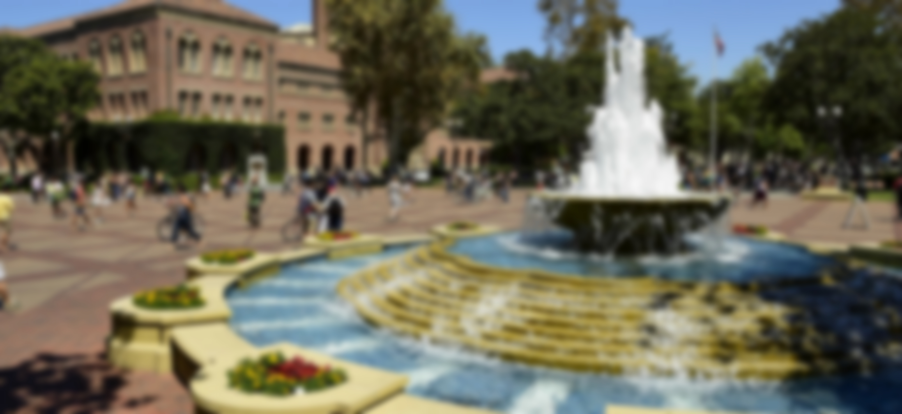
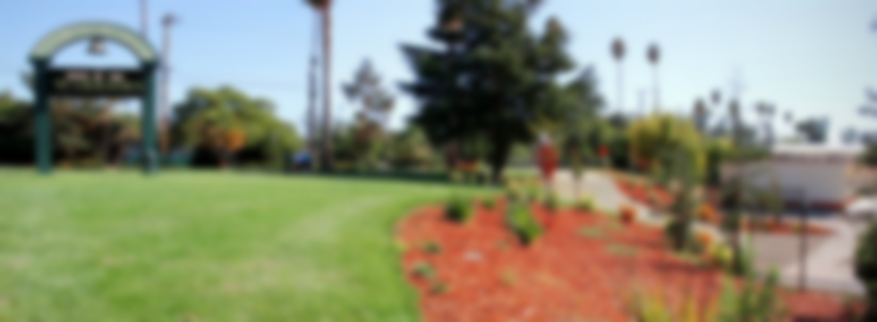

Learning new things is what I do best.

University of Southern California ● 2016 - 2020 ● GPA 3.92
I am studying Computer Engineering and Computer Science
I am recognized as a Presidential Scholar and Viterbi Dean's List Scholar
I am a member of the Association for Computing Machinery; Makers at USC; Queers in Engineering, Science, and Technology; and USC Concerto Chamber Orchestra
Go Trojans, and Fight On!

Mission San Jose High School ● 2012 - 2016 ● GPA 3.96
I received perfect scores in AP Physics 1, AP Physics C Mechanics, AP Physics C Electricity and Magnetism, AP Calculus BC, AP English Literature and Composition, and the PSAT
I am recognized as a National Merit Scholarship Corporation Finalist and an Eagle Scout
I was a member of MSJ Warrior Band, Perfect Noise Beatboxing Club, MSJ Gay-Straight Alliance, and the Teach the Future Foundation
Go Warriors!
Any team I lead is in good hands.
As a current student leader, I am:
Director of Marketing for Makers at USC
I run the official Facebook page, email account, Instagram, and Snapchat for the club, responding to member questions, sending regular emails, and helping raise awareness during recruitment season
ACM^2 Team Member
I plan, organize, and lead events throughout the semester for regular ACM members, including project inception, fundraising, outreach, and implementation
In the past, I have served as:
Horn Section Leader for MSJ Warrior Band
I oversaw the training and rehearsal of the fifteen French horn players, ensuring the quality of their sound and resolving conflicts between members, and also supervised them during our international trip to Europe
Eagle Scout, Patrol Leader, and Den Chief
I led other Scouts in fun events and activities at weekly meetings, supervised them during monthly outings, and taught them as many wilderness skills as possible; I earned the Eagle Scout rank after the completion of a large-scale landscaping project which I organized, as well as years of community service
I am a proud member of the gay community.
I am extremely grateful to have a loving family and supportive friends, all of whom celebrate who I am. One of my greatest wishes is that no one will ever have to face the fear of being rejected by the people they love because they are different.I am an active member of Queers in Engineering, Science, and Technology at USC and participated in MSJ Gay-Straight Alliance in high school. These organizations, though small, are important to me and many others because they strengthen the bond between the gay community and its allies.